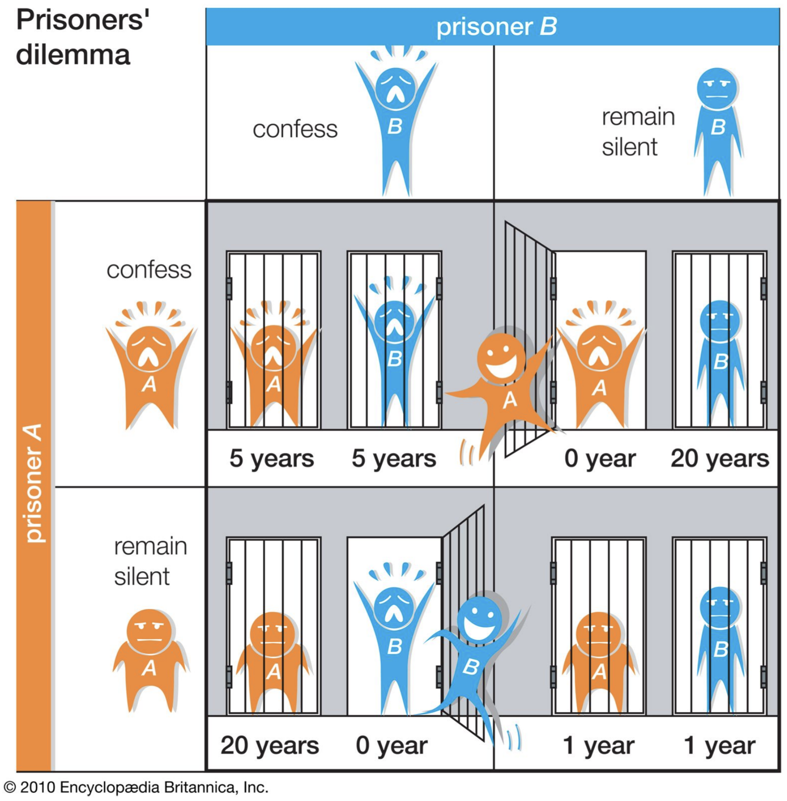
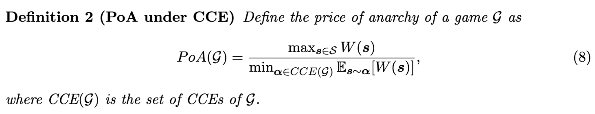
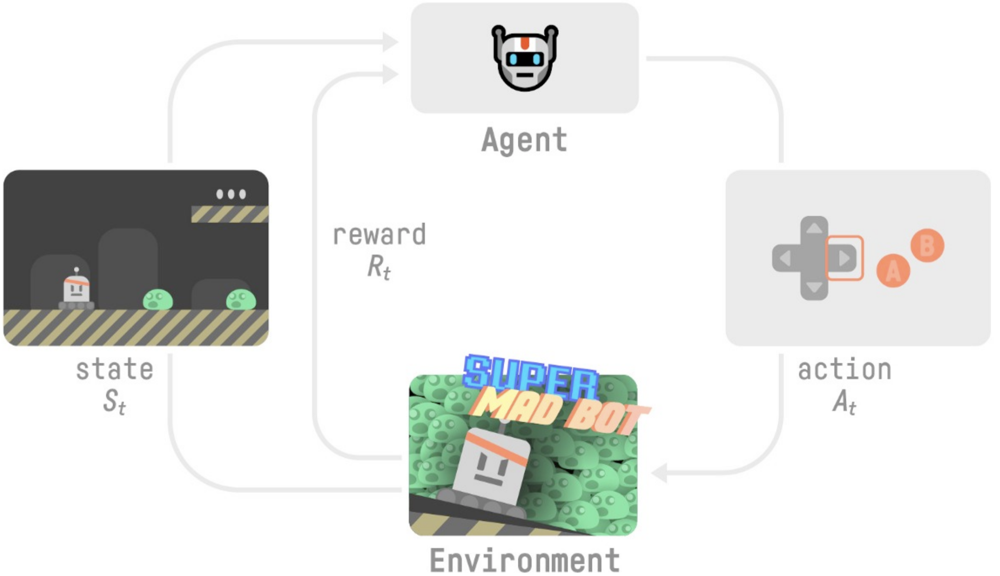

Pre-reading for the data science reading group as preparation for the paper How Bad is Top-K Recommendation under Competing Content Creators? (ICML 2023).
Recommender Systems
A recommender can help a user reach desired content more quickly and discover new content they wouldn’t otherwise find at all.
Imagine the user follows many people and topics on mastodon. A recommender can rank followed content by analysing the user’s past behaviour and interactions with the content. It can take into account factors such as how often and for how long the user interacts with certain content, what types of content the user tends to engage with more, and how similar the followed content is to other content the user has expressed interest in.
To recommend entirely novel content that they haven’t subscribed to, the recommender can use techniques such as collaborative filtering or content-based filtering. Collaborative filtering involves analysing information from other users with similar interests to make recommendations. Content-based filtering involves analysing the characteristics of the content itself to make recommendations based on similarities to other content the user has interacted with. Additionally, some recommenders may also use machine learning techniques to continuously learn and adjust recommendations based on user feedback.
A top-K recommender returns the top K items; the paper assumes a ranking that best orders user satisfaction if recommended content is consumed. Previous work considered ranking according to expected user views (alone), ignoring whether the user liked the content (explicitly by liking it or implicitly by, eg., watching from start to video).
Resources
Google tutorial on recommenders.
Arnie.
For Bruce: BPR: Bayesian Personalized Ranking from Implicit Feedback
Game Theory
Nash equilibrium is a concept in game theory where each player’s strategy is optimal given the strategies of the other players. It is a state where no player can improve their payoff by unilaterally changing their strategy.

Consider the Prisoner’s Dilemma game, where two suspects are being interrogated separately for a crime they have committed together. Each suspect has the option to either confess or remain silent. If both remain silent, they both receive a light sentence. If one confesses and the other remains silent, the one who confesses receives a reduced sentence while the other receives a harsher sentence. If both confess, they both receive a moderate sentence.
In this game, the Nash equilibrium is for both suspects to confess, as neither has an incentive to remain silent if they believe the other will confess. This results in both suspects receiving a moderate sentence, even though they would have received a lighter sentence if they had both remained silent.
In some situations, players may benefit from coordinating their strategies, which leads to the concept of correlated equilibriums. A correlated equilibrium is a set of probability distributions over the players’ strategies, where each player’s strategy is optimal given the observed probability distribution.
In the prisoner’s dilemma, the correlated equilibrium is a strategy profile where both players receive a signal that tells them which action to take. The signal is correlated with the other player’s action, so that each player can infer the other player’s action from their own signal. This allows the players to coordinate their actions and achieve a higher payoff (the lighter sentence) than they would in the Nash equilibrium.
Coarse correlated equilibrium is a refinement of correlated equilibrium where players are allowed to use a limited communication protocol to coordinate their strategies. These concepts are important in understanding the strategic behaviour of individuals in various contexts, such as economics, politics, and social interactions. Imperfect communication can be modelled as noisy.
A classic example of a coarse correlated equilibrium is the game of “matching pennies.” In this game, two players simultaneously choose to show either heads or tails on a flipped coin. If the two choices match, one player wins, and if they do not match, the other player wins.
In a coarse correlated equilibrium, the players agree to a randomization device, such as flipping a coin before the game begins, to determine their strategy. For example, Player 1 agrees to show heads if the coin lands on heads and tails if the coin lands on tails. Player 2 agrees to show heads if the coin lands on tails and tails if the coin lands on heads.
This strategy ensures that each player has a 50% chance of winning, regardless of the other player’s choice. This is a coarse correlated equilibrium because the players are not coordinating their strategies directly but rather through a pre-agreed randomization device.
Shapley Values
The Shapley value treats a cooperative game as the sum of all possible combinations of player strategies. It calculates the individual contribution of each player by determining how much value they would generate if they were to play their optimal strategy, assuming that all other players are also playing their optimal strategy.
It quantifies how much value a player generates independently of the other players’ strategies. It takes into account the marginal contribution of each player and provides a fair allocation of the total value among the players.
Resources
2.1 Game theory overview of Applications of game theory in deep learning: a survey
See also: SHAP
Price of Anarchy
The recommender system controls what content the end user can choose from by ranking content either by the number of views (exposure) or by the total user satisfaction (engagement). A creator will strategize to rank highly and therefore try to maximise their number of views or the satisfaction of their viewers. Depending on the choice of ranking, the back and forth can lead to very poor user experience. The price of anarchy quantifies the overall diminished social welfare compared to a centrally controlled mediator that dictates the strategy for each creator to maximise overall user engagement.

ùí¢_ is the game, W_ is social welfare (or total user utility/engagement) for group strategy s. The numerator is the maximum social welfare over all possible joint strategies; the denominator is the worst case minimum social welfare when creators choose their own content (and follow a coarse correlated equilibrium). PoA(ùí¢) ‚â• 1.
Reinforcement Learning
While game theory is the math theory of strategic interactions between rational decision-makers, reinforcement learning is a type of machine learning where an agent (player) learns from its environment (game) through trial and error; the agent receives feedback in the form of rewards or punishments for its actions (possibly, chosen in accordance with a policy), and uses this feedback to adjust its behaviour to maximise its reward.

Our Agent receives state S0​ from the Environment — we receive the first frame of our game (Environment). Based on that state S0, the Agent takes action A0​ — our Agent will move to the right. The environment goes to a new state S1​ — new frame. The environment gives some reward R1​ to the Agent — we’re not dead (Positive Reward +1).
Regret
Regret is the difference between the expected reward of the optimal action (or the action of a predetermined, fixed policy) and the actual reward received by the agent for the actions taken. It’s often used as a performance metric of a reinforcement algorithm. A no-regret learning algorithm ensures that the agent’s average regret approaches zero as it gains more experience in the environment. This is achieved by balancing exploration and exploitation of the environment, and by updating the agent’s decision-making strategy based on the observed rewards. No-regret learning is particularly useful in settings where the environment is stochastic or uncertain, and where the optimal decision may change over time.
Resources
Paper Summary
The paper explores the impact of competing content creators on user welfare in recommendation platforms. The authors model the creators’ competition and user decisions, and examine how relevance-driven recommendation influences the dynamics in the long run. They find that the myopic approach to recommendation performs reasonably well in the long run, as long as users’ decisions involve randomness and the platform provides reasonably many alternatives (K) to its users (if K=1 or user decisions are deterministic then the price of anarchy is ≥ 2!). They also show that the fraction of user welfare loss due to creator competition is at most 1 + O( 1 /log K ) if K>1, user choices have mild stochastic noise and if creators are incentivized to compete for user engagement (eg, how long they watch the video) rather than user exposure (eg, whether they start the video).